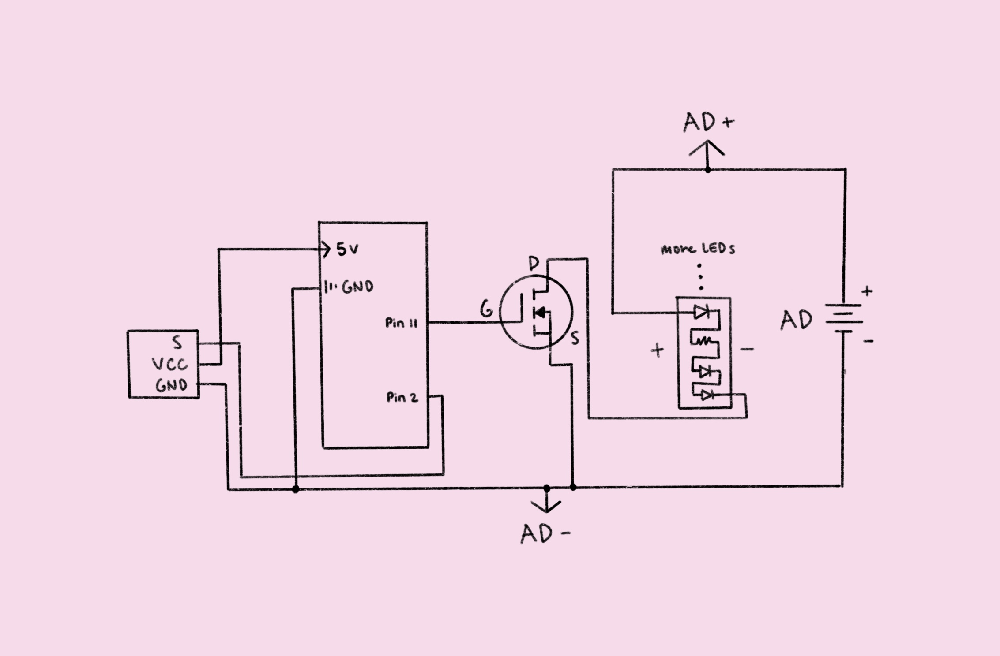

The circuit schematic illustrates each of the connections from an LED strip, IR receiver,
and n-MOSFET to their respective Arduino pins. It also includes an AC adapter (AD), which
serves as an external power supply for the Arduino. The adapter has input: AC 110-245V and
output: DC 12V/2A.
The circuit is split into an LED component and an IR remote/receiver component. The IR
component is powered by the 5V pin on the Arduino and uses digital pin 2 for sensor output.
The LED component is powered by the AC adapter and requires a n-MOSFET, connected to digital
pin 11, to control current flow. The Arduino has a current limitation of 200mA and the LED
strip (with 300 LEDs) draws 1.5A at 12V, so a transistor must be used to prevent damage to
any of the parts. The n-MOSFET (part FQP30N06L) used in the circuit can handle up to 32A at
a case temperature of +25°C.

#include // IRremote library V.4.
#define IR_RECEIVE_PIN 2 // Set digital pin 2 to IR pin
#define IR_BUTTON_0 12 // Set the value of button 0 to 12
#define IR_BUTTON_1 16 // Set the value of button 1 to 16
const int LED_PIN = 11; // Define digital/PWM pin 11 as LED pin
void setup() {
Serial.begin(9600); // Begin serial communications
IrReceiver.begin(IR_RECEIVE_PIN); // Initialize IR receiver at IR pin
pinMode(LED_PIN, OUTPUT); // Set LED pin mode to output
}
void loop() {
if (IrReceiver.decode()) { // Check for completely received IR frame
IrReceiver.resume(); // Resume the sensor
int command = IrReceiver.decodedIRData.command; // Retrieve button data
switch (command) { // Check which button was pressed
case IR_BUTTON_0: { // If button 0 was pressed...
Serial.println("Pressed on button 0"); // Print to serial monitor
analogWrite(LED_PIN, 0); // Set LED pin to low (turn off LEDs)
break; // Move on to next case
}
case IR_BUTTON_1: { // If button 1 was pressed...
Serial.println("Pressed on button 1"); // Print to serial monitor
analogWrite(LED_PIN, 255); // Set LED pin to high (turn off LEDs)
break; // Move on to next case
}
default: { // If anything else is pressed...
// do nothing
}
}
}
}
1. According to the data sheet, the maximum continous drain current
(i.e., the maximum amount of current that can be safely passed through
the drain terminal of a MOSFET without damaging it) is 37.2A at a case
temperature of +25°C. Therefore, the absolute maximum amount of current
between pins 2 and 3, drain and source respectively, is 37.2A.
2. Below is the schematic for a circuit that uses an Arduino, DC motor,
flyback diode, capacitor, n-MOSFET, and 9V battery (BAT). The part
numbers for each component are as follows: DC motor—ADA711,
diode—1N4001, capacitor—ADA2193, and n-MOSFET—DMT6009LCT.
3. Below is the schematic for a circuit using an Arduino (ARD), L293D
chip, 9V battery (BAT), and two DC motors. Also included is code to move
the motors both forwards, both back, one forward and one back, and one
back and one forward.
void setup() {
pinMode(12, OUTPUT);
pinMode(11, OUTPUT);
pinMode(10, OUTPUT);
pinMode(9, OUTPUT);
}
void loop() {
digitalWrite(12, HIGH);
digitalWrite(11, LOW);
digitalWrite(10, HIGH);
digitalWrite(9, LOW);
delay(2000);
digitalWrite(12, LOW);
digitalWrite(11, HIGH);
digitalWrite(10, LOW);
digitalWrite(9, HIGH);
delay(2000);
digitalWrite(12, HIGH);
digitalWrite(11, LOW);
delay(2000);
digitalWrite(12, LOW);
digitalWrite(11, HIGH);
digitalWrite(10, HIGH);
digitalWrite(9, LOW);
delay(2000);
}